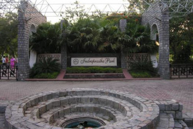
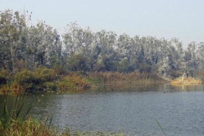

Parks
11. Indraprastha Park

Indraprastha Park is another landmark in Delhi. The Indraprastha Park has many sections such as Smriti Van, Fragrant Garden, Foliage Garden, Bougainville Garden and Topiary Garden. It is spread over an area of 34 hectares, strecthing 2.7 k.m. along the Ring Road. It is situated Along the Ring Road, Punctuated by the Railway Line in the rear and lies between ISBT-Sarai Kale Khan and Bhairon Road.Some of Delhi’s historic monuments form the backdrop to the park.
Location: Between ISBT-Sarai Kale Khan and Bhairon Road
12.Yamuna Biodiversity Park

Yamuna Biodiversity Park at Wazirabad is a lush green area of over 157 acres of land. The Yamuna Biodiversity Prk, Delhi is slated to act as a heritage site and repository of approximately 50 threatened communities of Yamuna river basin. It serves as an ideal alternative habitat for migratory and resident bird species. It is designed to conserve the wild genetic resources of multicultural crops and enhance ground water recharge and augment fresh water availability.
Location: Wazirabad
13. Nehru Park
Nehru Park, located near the Ashoka Hotel in the Chanakyapuri area is a nicely landscaped park. It is spread over an area of 85 acres and is a popular picnic spot.
Location: Vinay Marg, New Delhi (Adjacent to Ashoka Hotel)
14. Jahapanah Forest
Jahapanah Forest is a vast sprawl of green spread over about 800 Acres of land sandwiched between Chirag Delhi and Greater Kailash (GK). It is one of the most greenest area of South Delhi, popular for fitness freaks and bird watchers. The park has almost 7 km long jogging trek.
Location: Chirag Delhi
15.Talkatora Gardens
Located in Willingdon Crescent in New Delhi Talkatora Gardens was the remains of Mughal era garden which was later renovated. A part of the garden surrounded by hilly ground forming a bowl-shaped depression is what gave it its name. The park is great place for quality time with you friends and all and attracts lots of tourists and locals towards it.
Location: Willingdon Crescent, New Delhi, India<
16. Central Park Rajiv Chowk
Central Park is based on the metro station Rajiv Chowk at Connaught Place and attracts lots of locals and tourists to it. With innumerable trees and shrubs including round the year flowering plants, it has twinkling lampposts and four water bodies and a fountain.
Location:Rajiv Chowk
17. Mughal Garden
Mughal Gardens located in Rashtrapati Bhawan is a historically beautiful garden of Mughal Era which is built in Persian style of architecture. It is open to the public during February and March only. Its beauty lies in its beautiful flowers lush green trees and fountains. It is one of the most remarkable gardens if the city.
Location: Rashtrapati Bhavan, New Delhi, Delhi 110004, India